수질환경기사 (2022-04-24 기출문제)
1과목: 수질오염개론
1. 하수가 유입된 하천의 자정작용을 하천 유하거리에 따라 분해지대, 활발한 분해지대, 회복지대, 정수지대의 4단계로 분류하여 나타내는 경우, 회복지대의 특성으로 틀린 것은?
- 세균수가 감소한다.
- 발생된 암모니아성 질소가 질산화 된다.
- 용존산소의 농도가 포화될 정도로 증가한다.
- 규조류가 사라지고 윤충류, 갑각류도 감소한다.
(정답률: 57%)

2. 강우의 pH의 관한 설명으로 틀린 것은?
- 보통 대기중의 이산화탄소와 평형상태에 있는 물은 약 pH 5.7의 산성을 띠고 있다.
- 신성강우의 주요원인 물질로 황산화물, 질소산화물 및 염소산화물을 들 수 있다.
- 산성강우현상은 대기오염이 혹심한 지역에 국한되어 나타난다.
- 강우는 부유재(fly ash)로 인하여 때때로 알칼리성을 띨 수 있다.
(정답률: 75%)
3. 호소의 부영양화에 대한 일반적 영향으로 틀린 것은?
- 부영양화가 진행된 수원을 농업용수로 사용하면 영양염류의 공급으로 농산물 수확량이 지속적으로 증가한다.
- 조류나 미생물에 의해 생성된 용해성 유기물질이 불쾌한 맛과 냄새를 유발한다.
- 부영양화 평가모델은 인(P)부하모델인 Vollenweider 모델 등이 대표적이다.
- 심수층의 용존산소량이 감소한다.
(정답률: 79%)
4. 수질오염물질 중 중금속에 관한 설명으로 틀린 것은?
- 카드뮴 : 인체 내에서 투과성이 높고 이동성이 있는 독성 메틸 유도체로 전환된다.
- 비소 : 인산염 광물에 존재해서 인 화합물 형태로 환경 중에 유입된다.
- 납 : 급성독성은 신장, 생식계통, 간 그리고 뇌와 중추신경계에 심각한 장애를 유발한다.
- 수은 : 수은 중독은 BAL, Ca2EDTA로 치료할 수 있다.
(정답률: 36%)
5. 광합성에 대한 설명으로 틀린 것은?
- 호기성광합성(녹색식물의 광합성)은 진조류와 청녹조류를 위시하여 고등식물에서 발견된다.
- 녹색식물의 광합성은 탄산가스와 물로부터 산소와 포도당(또는 포도당 유도산물)을 생성하는 것이 특징이다.
- 세균활동에 의한 광합성은 탄산가스의 산화를 위하여 물 이외의 화합물질이 수소원자를 공여, 유리산소를 형성한다.
- 녹색식물의 광합성 시 광은 에너지를 그리고 물은 환원반응에 수소를 공급해 준다.
(정답률: 52%)
6. 물의 특성에 대한 설명으로 옳지 않은 것은?
- 기화열이 크기 때문에 생물의 효과적인 체온 조절이 가능하다.
- 비열이 크기 때문에 수온의 급격한 변화를 방지해 줌으로써 생물활동이 가능한 기온을 유지한다.
- 융해열이 작기 때문에 생물체의 결빙이 쉽게 일어나지 않는다.
- 빙점과 비점사이가 100℃나 되므로 넓은 범위에서 액체 상태를 유지할 수 있다.
(정답률: 74%)
7. 생물농축에 대한 설명으로 가장 거리가 먼 것은?
- 수생생물체내의 각종 중금속 농도는 환경수중의 농도보다는 높은 경우가 많다.
- 생물체중의 농도와 환경수중의 농도비를 농축비 또는 농축계수라고 한다.
- 수생생물의 종류에 따라서 중금속의 농축비가 다른 경우가 많다.
- 농축비는 먹이사슬 과정에서 높은 단계의 소비자에 상당하는 생물일수록 낮게 된다.
(정답률: 69%)
8. 벤젠, 톨루엔, 에틸벤젠, 자일렌이 같은 몰수로 혼합된 용액이 라울트 법칙을 따른다고 가정하면 혼합액의 총 증기압(25℃기준, atm)은? (단, 벤젠, 톨루엔, 에틸벤젠,, 자일렌의 25℃에서 순수액체의 증기압은 각각 0.126. 0.038, 0.0126, 0.01177 atm이며, 기타 조건은 고려하지 않음)
- 0.047
- 0.⑤7
- 0.067
- 0.077
(정답률: 53%)
9. BOD5가 270mg/L이고, COD가 450mg/L인 경우, 탈산소계수(K1)의 값이 0.1/day일 때, 생물학적으로 분해 불가능한 COD(mg/L)는? (단, BDCOD = BODu, 상용대수 기준)
- 약 55
- 약 65
- 약 75
- 약 85
(정답률: 42%)
10. 다음은 수질조사에서 얻은 결과인데, Ca2+ 결과치의 분실로 인하여 기재가 되지 않았다. 주어진 자료로부터 Ca2+ 농도(mg/L)는?
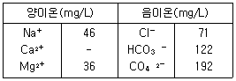
- 20
- 40
- 60
- 80
(정답률: 40%)
11. 부영양화가 진행된 호소에 대한 수면관리 대책으로 틀린 것은?
- 수증폭기한다.
- 퇴적층을 준설한다.
- 수생식물을 이용한다.
- 살조제는 황산알루미늄을 주로 많이 쓴다.
(정답률: 38%)
12. 생물학적 질화 중 아질산화에 관한 설명으로 틀린 것은?
- Nitrobacter에 의해 수행된다.
- 수율은 0.04~0.13mg VSS/mg NH4+ -N정도이다.
- 관련 미생물은 독립영양성 세균이다.
- 산소가 필요하다.
(정답률: 38%)
13. 0.01 M-KBr과 0.02 M-ZnSO4 용액의 이온강도는? (단, 완전 해리 기준)
- 0.08
- 0.09
- 0.12
- 0.14
(정답률: 52%)
14. 바닷물에 0.⑤4M의 MgCl2가 포함되어 있을 때 바닷물 250mL에 포함되어 있는 MgCl2의 양(g)은? (단, 원자량 Mg = 24.3, Cl = 35.5)
- 약 0.8
- 약 1.3
- 약 2.6
- 약 3.9
(정답률: 68%)
15. 반응속도에 관한 설명으로 알맞지 않은 것은?
- 영차반응 : 반응물의 농도에 독립적인 속도로 진행하는 반응이다.
- 일차반응 : 반응속도가 시간에 따른 반응물의 농도변화 정도에 반비례하여 진행하는 반응이다.
- 이차반응 : 반응속도가 한가지 반응물 농도의 제곱에 비례하여 진행하는 반응이다.
- 실험치에 따라 특정 반응속도의 차수를 구하기 위하여는 시간에 따른 농도변화를 그래프로 그리고 직선으로부터의 편차를 구하여 평가한다.
(정답률: 65%)
16. 방사성 물질인 스트론튬(Sr90)의 반감기가 29년이라면 주어진 양의 스트론튬(Sr90)이 99% 감소하는데 걸리는 시간(년)은?
- 143
- 193
- 233
- 273
(정답률: 58%)
17. 수질모델링을 위한 절차에 해당하는 항목으로 가장 거리가 먼 것은?
- 변수추정
- 수질예측 및 평가
- 보정
- 감응도 분석
(정답률: 46%)
18. 다음과 같은 수질을 가진 농업용수의 SAR값은? (단, Na+ = 460mg/L, PO43- = 1500mg/L, Cl- = 108mg/L, Ca2+ = 600mg/L, Mg2+ = 240mg/L, NH3-N = 380mg/L, 원자량 = Na : 23, P : 31, Cl : 35.5, Ca : 40, Mg : 24)
- 2
- 4
- 6
- 8
(정답률: 46%)
19. 다음의 기체 법칙 중 옳은 것은?
- Boyle의 법칙 : 일정한 압력에서 기체의 부피는 정대온도에 정비례한다.
- Henry의 법칙 : 기체와 관련된 화학반응에서는 반응하는 기체와 생성되는 기체의 부피 사이에 정수관계가 있다.
- Graham의 법칙 : 기체의 확산속도(조그마한 구멍을 통한 기체의 탈출)는 기체 분자량의 제곱근에 반비례한다.
- Gay-Lussac의 결합 부피 법칙 : 혼합 기체내의 각 기체의 부분압력은 혼합물 속의 기체의 양에 비례한다.
(정답률: 66%)
20. 시료의 BOD5가 200mg/L이고 탈산소계수값이 0.15day-1일 때 최종 BOD(mg/L)는?
- 약 213
- 약 223
- 약 233
- 약 243
(정답률: 45%)
2과목: 상하수도계획
21. 계획 오수량에 관한 설명으로 ()에 알맞은 내용은?
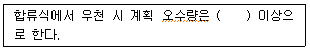
- 원칙적으로 계획 1일 최대 오수량의 2배
- 원칙적으로 계획 1일 최대 오수량의 3배
- 원칙적으로 계획시간 최대 오수량의 2배
- 원칙적으로 계획시간 최대 오수량의 3배
(정답률: 41%)
22. 하수 배제방식의 특징에 대한 설명으로 옳지 않은 것은?
- 분류식은 우천 시에 월류가 없다.
- 분류식은 강우초기 노면 세정수가 하천 등으로 유입되지 않는다.
- 합류식 시설의 일부를 개선 또는 개량하면 강우초기의 오염된 우수를 수용해서 처리할 수 있다.
- 합류식은 우천 시 일정량 이상이 되면 오수가 월류한다.
(정답률: 16%)
23. 정수처리방법인 중간염소처리에서 염소의 주입 지점으로 가장 적절한 것은?
- 혼화지와 침전지 사이
- 침전지와 여과지 사이
- 착수정과 혼화지 사이
- 착수정과 도수관 사이
(정답률: 45%)
24. 계획취수량을 확보하기 위하여 필요한 저수용량의 결정에 사용되는 계획기준년에 관한 내용으로 ()에 적절한 것은?
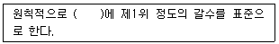
- 5개년
- 7개년
- 10개년
- 15개년
(정답률: 53%)
25. 하수관로에 관한 설명 중 옳지 않은 것은?
- 우수관로에서 계획하수량은 계획우수량으로 한다.
- 합류식 관로에서 계획하수량은 계획시간 최대오수량에 계획우수량을 합한 것으로 한다.
- 차집관로에서 계획하수량은 계획시간 최대 오수량으로 한다.
- 지역의 실정에 따라 계획하수량에 여유율을 둘 수 있다.
(정답률: 35%)
26. 기존의 하수처리시설에 고도처리시설을 설치하고자 할 때 검토사항으로 틀린 것은?
- 표준활성슬러지법이 설치된 기존처리장의 고도처리 개량은 개선대상 오염물질별 처리특성을 감안하여 효율적인 설계가 되어야 한다.
- 시설개량은 시설개량방식을 우선 검토하되 방류수 수질기준 준수가 곤란한 경우에 한해 운전개선방식을 함께 추진하여야 한다.
- 기본설계과정에서 처리장의 운영실태 정밀분석을 실시한 후 이를 근거로 사업추진방향 및 범위 등을 결정하여야 한다.
- 기존시설물 및 처리공정을 최대한 활용하여야 한다.
(정답률: 41%)
27. 해수담수화방식 중 상(相)변화방식인 증발법에 해당되는 것은?
- 가스수화물법
- 다중효용법
- 냉동법
- 전기투석법
(정답률: 39%)
28. 1분당 300m3의 물을 150m 양정(전양정)할 때 최고효율점에 달하는 펌프가 있다. 이 때의 회전수가 1500rpm이라면, 이 펌프의 비속도(비교회전도)는?
- 약 512
- 약 554
- 약 606
- 액 658
(정답률: 38%)
29. 펌프의 토출량이 0.20m3/sec, 흡입구 유속이 3m/sec인 경우, 펌프의 흡입구경(mm)은?
- 약 198
- 약 292
- 약 323
- 약 412
(정답률: 38%)
30. 막모듈의 열화와 가장 거리가 먼 것은?
- 장기적인 압력부하에 의한 막 구조의 압밀화
- 건조되거나 수축으로 인한 막 구조의 비가역적인 변화
- 원수 중의 고형물이나 진동에 의한 막 면의 상처, 마모, 파단
- 막의 다공질부의 흡착, 석출, 포착 등에 의한 폐색
(정답률: 42%)
31. 상수도 계획급수량과 관련된 내용으로 잘못된 것은?
- 계획1일평균급수량=계획1일평균사용수량/계획유효율
- 계획1일최대급수량=계획1일평균급수량×계획첨두율
- 일반적인 산청절차는 각 용도별 1일평균사용수량(실적)→각 계획용도별 1일평균 사용수량→계획 1일평균사용수량→계획1일평균급수량→계획 1일최대급수량으로 한다.
- 일반적으로 소규모 도시일수록 첨두율 값이 작다.
(정답률: 46%)
32. 오수 이송방법은 자연유하식, 압력식, 진공식이 있다. 이중 압력식(다중압송)에 관한 내용으로 옳지 않은 것은?
- 지형변화에 대응이 어렵다.
- 지속적인 유지관리가 필요하다.
- 저지대가 많은 경우 시설이 복잡하다.
- 정전 등 비상대책이 필요하다.
(정답률: 44%)
33. 도수거에 관한 설명으로 옳지 않은 것은?
- 수리학적으로 자유 수면을 갖고 중력 작용으로 경사진 수로를 흐르는 시설이다.
- 개거나 암거인 경우에는 대개 300~500m 간격으로 시공조인트를 겸한 신축조인트를 설치한다.
- 균일한 동수경사(통상 1/3000~1/1000)로 도수하는 시설이다.
- 도수거의 평균유속의 최대한도는 3.0m/sec로 하고 최소유속은 0.3m/sec로 한다.
(정답률: 38%)
34. 하수처리를 위한 산화구법에 관한 설명으로 틀린 것은?
- 용량은 HRT가 24~48시간이 되도록 정한다.
- 형상은 장원형무한수로로 하며 수심은 1.0~3.0m, 수로 폭은 2.0~6.0m 정도가 되도록 한다.
- 저부하조건의 운전으로 SRT가 길어 질산화반응이 진행되기 때문에 무산소조건을 적절히 만들면 70% 정도의 질소제거가 가능하다.
- 산화구내의 혼합상태가 균일하여도 구내에서 MLSS, 알칼리도 농도의 구배는 크다.
(정답률: 22%)
35. 취수시설에서 침사지에 관한 설명으로 옳지 않은 것은?
- 지의 위치는 가능한 한 취수구에 근접하여 제내지에 설치한다.
- 지의 상단높이는 고수위보다 0.3~0.6m의 여유고를 둔다.
- 지의 고수위는 계획취수량이 유입될 수 있도록 취수구의 계획최저수위 이하로 정한다.
- 지의 길이는 폭의 3~8배, 지내 평균 유속 2~7cm/sec를 표준으로 한다.
(정답률: 28%)
36. 상수의 공급과정을 바르게 나타낸 것은?
- 취수→도수→정수→송수→배수→급수
- 취수→도수→송수→정수→배수→급수
- 취수→송수→정수→배수→도수→급수
- 취수→송수→배수→정수→도수→급수
(정답률: 56%)
37. 계획취수량이 10m3/sec, 유입수심이 5m, 유입속도가 0.4m/sec인 지역에 취수구를 설치하고자 할 때 취수구의 폭(m)은? (단, 취수보 설계 기준)
- 0.5
- 1.25
- 2.5
- 5.0
(정답률: 37%)
38. 정수시설 중 폴록형성지에 관한 설명으로 틀린 것은?
- 기계식교반에서 플록큐레이터(flocculator)의 주변속도는 5~10cm/sec를 표준으로 한다.
- 플록형성시간은 계획정수량에 대하여 20~40분간을 표준으로 한다.
- 직사각형이 표준이다.
- 혼화지와 침전지 사이에 위치하고 침전지에 붙여서 설치한다.
(정답률: 25%)
39. 오수관거 계획 시 기준이 되는 오수량은?
- 계획시간최대오수량
- 계획1일최대오수량
- 계획시간평균오수량
- 계획1일평균오수량
(정답률: 32%)
40. 천정호(얕은우물)의 경우 양수량
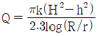
로 표시된다. 반경 0.5m의 천정호 시험정에서 H = 6m, h = 4m, R = 50m인 경우에 Q = 0.6m3/sec의 양수량을 얻었다. 이 조건에서 투수계수(Rm/sec)는?- 0.044
- 0.073
- 0.086
- 0.146
(정답률: 38%)
3과목: 수질오염방지기술
41. 탈질소 공정에서 폐수에 탄소원 공급용으로 가해지는 약품은?
- 응집제
- 질산
- 소석회
- 메탄올
(정답률: 42%)
42. MLSS의 농도가 1500mg/L인 슬러지를 부상법으로 농축시키고자 한다. 압축탱크의 유효전달 압력이 4기압이며 공기의 밀도가 1.3g/L, 공기의 용해량이 18.7mL/L일 때 A/S비는? (단, 유량 = 300m3/day, f = 0.5, 처리수의 반송은 없다.)
- 0.008
- 0.010
- 0.016
- 0.020
(정답률: 25%)
43. 포기조 내의 혼합액의 SVI가 100이고, MLSS농도를 2200mg/L로 유지하려면 적정한 슬러지의 반송률(%)은? (단, 유입수의 SS는 무시한다.)
- 23.6
- 28.2
- 33.6
- 38.3
(정답률: 22%)
44. 기계적으로 청소가 되는 바 스크린의 바(bar)두께는 5mm이고 바 간의 거리는 30mm이다. 바를 통과하는 유속이 0.90m/sec일 때 스크린을 통과하는 수두손실(m)은? 단,
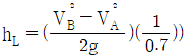
)- 0.0157
- 0.0238
- 0.0325
- 0.0452
(정답률: 17%)
45. 경사판 침전지에서 경사판의 효과가 아닌 것은?
- 수면적 부하율의 증가효과
- 침전지 소요면적의 저감효과
- 고형물의 침전효율 증대효과
- 처리효율의 증대효과
(정답률: 33%)
46. 분뇨의 생물학적 처리공법으로서 호기성 미생물이 아닌 혐기성 미생물을 이용한 혐기성처리공법을 주로 사용하는 근본적인 이유는?
- 분뇨에는 혐기성미생물이 살고 있기 때문에
- 분뇨에 포함된 오염물지은 혐기성미생물만이 분해할 수 있기 때문에
- 분뇨의 유기물 농고가 너무 높아 포기에 너무 많은 비용이 들기 때문에
- 혐기성처리공법으로 발생되는 메탄가스가 공법에 필수적이기 때문에
(정답률: 43%)
47. 크롬함유 폐수를 환원처리공법 중 수산화물 침전법으로 처리하고자 할 때 침전을 위한 적정 pH 범위는? (단, Cr3 + 3OH- → Cr(OH)3↓)
- pH 4.0~4.5
- pH 5.5~6.5
- pH 8.0~8.5
- pH 11.0~11.5
(정답률: 24%)
48. Side Steram을 적용하여 생물학적 방법과 화학적 방법으로 인을 제거하는 공정은?
- 수정 Bardenpho 공정
- Phostrip 공정
- SBR 공정
- UCT 공정
(정답률: 50%)
49. 이온교환막 전기투석법에 관한 설명 중 옳지 않은 것은?
- 칼슘, 마그네슘 등 경도 물질의 제거효율은 높지만 인 제거율은 상대적으로 낮다.
- 콜로이드성 현탁물질 제거에 주로 적용된다.
- 배수 중의 용존염분을 제거하여 양질의 처리수를 얻는다.
- 소요전력은 용존염분농도에 비례하여 증가한다.
(정답률: 25%)
50. 분리막을 이용한 수처리 방법 중 추진력이 정수압차가 아닌 것은?
- 투석
- 정밀여과
- 역삼투
- 한외여과
(정답률: 35%)
51. 폐수처리에 관련된 침전현상으로 입자간에 작용하는 힘에 의해 주변입자들의 침전을 방해하는 중간정도 농도 부유액에서의 침전은?
- 제1형 침전(독립침전)
- 제2형 침전(응집침전)
- 제3형 침전(계면침전)
- 제4형 침전(압밀침전)
(정답률: 25%)
52. 생물학적 우너리를 이용하여 질소, 인을 제거하는 공정인 5단계 Bardenpho 공법에 관한 설명으로 옳지 않은 것은?
- 인 제거를 위해 혐기성조가 추가된다.
- 조 구성은 혐기성조, 무산소조, 호기성조, 무산소조, 호기성조 순이다.
- 내부반송률은 유입유량 기준으로 100~200% 정도이며 2단계 무산소조로부터 1단계 무산소조로 반송된다.
- 마지막 호기성 단계는 폐수 내 잔류 질소가스를 제거하고 최종 침전지에서 인의 용출을 최소화하기 위하여 사용한다.
(정답률: 18%)
53. 회전원판법(RBC)의 장점으로 가장 거리가 먼 것은?
- 미생물에 대한 산소 공급 소요전력이 적다.
- 고정메디아로 높은 미생물 농도 및 슬러지일령을 유지할 수 있다.
- 기온에 따른 처리효율의 영향이 적다.
- 재순환이 필요 없다.
(정답률: 27%)
54. 상향류 혐기성 슬러지상의 장점이라 볼 수 없는 것은?
- 미생물 체류시간을 적절히 조절하면 저농도 유기성 폐수의 처리도 가능하다.
- 기계적인 교반이나 여재가 필요 없기 때문에 비용이 적게 든다.
- 고액 및 기액분리장치를 제외하면 전체적으로 구조가 간단하다.
- 폐수 성상이 슬러지 입상화에 미치는 영향이 적어 안정된 처리가 가능하다.
(정답률: 15%)
55. 하수 고도처리 공법인 Phostrip 공정에 관한 설명으로 옳지 않은 것은?
- 기존 활성슬러지 처리장에 쉽게 적용 가능하다.
- 인제거 시 BOD/P비에 의하여 조절되지 않는다.
- 최종침전지에서 인용출을 위해 용존산소를 낮춘다.
- Mainstream 화학침전에 비하여 약품사용량이 저다.
(정답률: 16%)
56. 생물학적 처리법 가운데 살수여상법에 대한 설명으로 가장 거리가 먼 것은?
- 슬러지일령은 부유성장 시스템보다 높아 100일 이상의 슬러지일령에 쉽게 도달된다.
- 총괄 관측수율은 전형적인 활성슬러지공정의 60~80% 정도이다.
- 덮개 없는 여상의 재순환율을 증대시키면 실제로 여상 내의 평균온도가 높아진다.
- 정기적으로 여상에 살충제를 살포하거나 여상을 침수토록 하여 파리문제를 해결할 수 있다.
(정답률: 23%)
57. 평균 유입하수량 10000m3/day인 도시하수처리장의 1차침전지를 설계하고자 한다. 1차침전지의 표면부하율을 50m3m2ㆍday로 하여 원형침전지를 설계한다면 침전지의 직경(m)은?
- 약 14
- 약 16
- 약 18
- 약 20
(정답률: 35%)
58. 수온 20℃일 때, pH6.0이면 응결에 효과적이다. pOH를 일정하게 유지하는 경우, 5℃일 때의 pH는? (단, 20℃일 때 Kw = 0.68×10-14)
- 4.34
- 6.47
- 8.31
- 10.22
(정답률: 27%)
59. 2차 처리 유출수에 포함된 25m/L의 유기물을 분말 활성탄 흡착법으로 3차 처리하여 2mg/L될 때 까지 제거하고자 할 때 폐수 3m3당 필요한 활성탄의 양(g)은? (단, Freundlich 등온식 활용, k=0.5, n=1)
- 69
- 76
- 84
- 91
(정답률: 12%)
60. 수온 20℃에서 평균직경 1mm인 모래입자의 침전속도(m/sec)는? (단, 동점성값은 1.003×10-6m2/sec, 모래비중은 2.5 Stoke's법칙 이용)
- 0.414
- 0.614
- 0.814
- 1.014
(정답률: 20%)
4과목: 수질오염공정시험기준
61. 시료의 보존방법으로 틀린 것은?
- 아질산성 질소 : 4℃ 보관, H2SO4로 pH2 이하
- 총질소(용존 총질소) : 4℃ 보관, H2SO4로 pH 2 이하
- 화학적 산소요구량 : 4℃ 보관, H2SO4로 pH 2이하
- 암모니아성 질소 : 4℃ 보관, H2SO4로 pH 2 이하
(정답률: 15%)
62. 원자흡수분광광도법에서 일어나는 간섭에 대한 설명으로 틀린 것은?
- 광학적 간섭 : 분석하고자 하는 원소의 흡수 파장과 비슷한 다른 원소의 파장이 서로 겹쳐 비이상적으로 높게 측정되는 경우 발생
- 물리적 간섭 : 표준용액과 시료 또는 시료와 시료 간의 물리적 성질(점도, 밀도, 표면장력 등)의 차이 또는 표준물질과 시료의 매질(matrix) 차이에 의해 발생
- 화학적 간섭 : 불꽃의 온도가 분자를 들뜬 상태로 만들기에 충분히 높지 않아서, 해당 파장을 흡수하지 못하여 발생
- 이온화 간섭 : 불꽃온도가 너무 낮을 경우 중성원자에서 전자를 빼앗아 이온이 생성될 수 있으며 이 경우 양(+)의 오차가 발생
(정답률: 26%)
63. 공장의 폐수 100mL를 취하여 산성 100℃에서 KMnO4에 의한 화학적산소소비량을 측정하였다. 시료의 적정에 소비된 0.025N KMnO4의 양이 7.5mL였다면 이 폐수의 COD(mg/L)는? (단, 0.025N KMnO4 factor = 1.02, 바탕시험 적정에 소비된 0.025 N KMnO4 = 1.00mL)
- 13.3
- 16.7
- 24.8
- 32.2
(정답률: 9%)
64. 35% HCI(비중 1.19)을 10% HCI으로 만들기 위한 35% HCI과 물의 용량비는?
- 1 : 1.5
- 3 : 1
- 1 : 3
- 1.5 : 1
(정답률: 24%)
65. 분원성 대장균군-막여과법에서 배양온도 유지 기준은?
- 25±0.2℃
- 30±0.5℃
- 35±0.5℃
- 44.5±0.2℃
(정답률: 27%)
66. ppm을 설명한 것으로 틀린 것은?
- ppb농도의 1000배이다.
- 백만분율이라고 한다.
- mg/kg이다.
- %농도의 1/1000이다.
(정답률: 46%)
67. 유도결합플라스마-원자발광분광법에 의한 원소별 정량한계로 틀린 것은?
- Cu : 0.006mg/L
- Pb : 0.004mg/L
- Ni : 0.015mg/L
- Mn : 0.002mg/L
(정답률: 13%)
68. 수질오염공정시험기준상 이온크로마토그래피법을 정량분석에 이용할 수 없는 항목은?
- 염소이온
- 아질산성 질소
- 질산성 질소
- 암모니아성 질소
(정답률: 26%)
69. 자외선/가시선 분광법을 적용한 음이온계면활성제 측정에 관한 설명으로 틀린 것은?
- 정량한계는 0.02mg/L이다.
- 시료 중의 계면활성제를 종류별로 구분하여 측정할 수 없다.
- 시료 속에 미생물이 있는 경우 일부의 음이온 계면활성제가 신속히 변할 가능성이 있으므로 가능한 빠른 시간 안에 분석을 하여야 한다.
- 양이온 계면활성제가 존재할 경우 양의 오차가 발생한다.
(정답률: 18%)
70. 적절한 보존방법을 적용한 경우 시료 최대보존기간이 가장 긴 항목은?
- 시안
- 용존 총인
- 질산성 질소
- 암모니아성 질소
(정답률: 9%)
71. 용존산소(DO)측정 시 시료가 착색, 현탁된 경우에 사용하는 전처리시약은?
- 칼륨명반용액, 암모니아수
- 황산구리, 슬러민산용액
- 황산, 불화칼륨용액
- 황산제이철용액, 과산화수소
(정답률: 18%)
72. 수질오염공정시험기준상 총대장균군의 시험방법이 아닌 것은?
- 현미경계수법
- 막여과법
- 시험관법
- 평판집락법
(정답률: 38%)
73. 노말헥산추출물질 측정을 위한 시험방법에 관한 설명으로 ()에 옳은 것은?
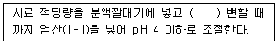
- 메틸오렌지용액(0.1%) 2~3 방울을 넣고 황색이 적색으로
- 메틸오렌지용액(0.1%) 2~3 방울을 넣고 적색이 황색으로
- 메틸오렌지용액(0.5%) 2~3 방울을 넣고 황색이 적색으로
- 메틸오렌지용액(0.5%) 2~3 방울을 넣고 적색이 황색으로
(정답률: 15%)
74. 전기전도도 특정에 관한 설명으로 틀린 것은?
- 용액이 전류를 운반할 수 있는 정도를 말한다.
- 온도차에 의한 영향이 적어 폭 넓게 적용된다.
- 용액에 담겨있는 2개의 전극에 일정한 전압을 가해주면 가압 전압이 전류를 흐르게 하며, 이 때 흐르는 전류의 크기는 용액의 전도도에 의존한다는 사실을 이용한다.
- 용액 중의 이온세기를 신속하게 평가할 수 있는 항목으로 국제적으로 S(Siemens)단위가 통용되고 있다.
(정답률: 24%)
75. 크롬-원자흡수분광광도법의 정량한계에 관한 내용으로 ()에 옳은 것은?
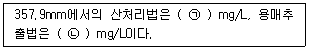
- ㉠ 0.1, ㉡ 0.01
- ㉠ 0.01, ㉡ 0.1
- ㉠ 0.01, ㉡ 0.001
- ㉠ 0.001, ㉡ 0.01
(정답률: 7%)
76. 온도에 관한 내용으로 옳지 않은 것은?
- 찬 곳은 따로 규정이 없는 한 0~15℃의 곳을 뜻한다.
- 냉수는 15℃이하를 말한다.
- 온수는 70~90℃를 말한다.
- 상온은 15~25℃를 말한다.
(정답률: 45%)
77. ‘항량으로 될 때까지 건조한다’는 정의 중 ()에 해당하는 것은?
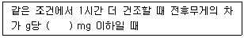
- 0
- 0.1
- 0.3
- 0.5
(정답률: 40%)
78. 냄새역치(TON)의 계산식으로 옳은 것은? (단, A : 시료부피(mL), B : 무취 정제수 부피(mL))
- (A+B)/B
- (A+B)/A
- A/(A+B)
- B/(A+B)
(정답률: 19%)
79. 취급 또는 저장하는 동안에 기체 또는 미생물이 침입하지 아니하도록 내용물을 보호하는 용기는?
- 밀봉용기
- 밀폐용기
- 기밀용기
- 차폐용기
(정답률: 31%)
80. 공장폐수 및 하수유량-관(pipe)내의 유량측정 방법 중 오리피스에 관한 설명으로 옳지 않은 것은?
- 설치에 비용이 적게 소요되며 비교적 유량측정이 정확하다.
- 오리피스판의 두께에 따라 흐름의 수로 내외에 설치가 가능하다.
- 오리피스 단면에 커다란 수두손실이 일어나는 단점이 있다.
- 단면이 축소되는 목부분을 조절함으로써 유량이 조절된다.
(정답률: 11%)
5과목: 수질환경관계법규
81. 물놀이 등의 행위제한 권고기준 중 대상행위가 ‘어패류 등 섭취’인 경우인 것은?
- 어패류 체내 총 카드뮴 : 0.3mg/kg 이상
- 어패류 체내 총 카드뮴 : 0.03mg/kg 이상
- 어패류 체내 총 수은 : 0.3mg/kg 이상
- 어패류 체내 총 은 : 0.03mg/kg 이상
(정답률: 16%)
82. 기본배출부과금 산정에 필요한 지역별 부과계수로 옳은 것은?
- 청정지역 및 가 지역 : 1.5
- 청정지역 및 가 지역 : 1.2
- 나 지역 및 특례지역 : 1.5
- 나 지역 및 특례지역 : 1.2
(정답률: 38%)
83. 사업장별 환경기술인의 자격기준에 관한 설명으로 옳지 않은 것은?
- 방지시설 설치면제 대상 사업장과 배출시설에서 배출되는 수질오염물질 등을 공동방지시설에서 처리하게 하는 사업장은 제3종사업장에 해당하는 환경기술인을 두어야 한다.
- 연간 90일 미만 조업하는 제1종부터 제3종까지의 사업장은 제4종ㆍ제5종사업장에 해당하는 환경기술인을 선임할 수 있다.
- 공동방지시설에 있어서 폐수배출량이 제4종 또는 제5종사업장의 규모에 해당하면 제3종 사업장에 해당하는 환경기술인을 두어야 한다.
- 대기환경기술인으로 임명된 자가 수질환경 기술인의 자격을 함께 갖춘 경우에는 수질환경기술인을 겸임할 수 있다.
(정답률: 16%)
84. 폐수수탁처리업에서 사용하는 폐수운반차량에 관한 설명으로 틀린 것은?
- 청색으로 도색한다.
- 차량 양쪽 옆면과 뒷면에 폐수운반차량, 회사명, 허기번호 및 용량을 표시하여야 한다.
- 차량에 표시는 흰색바탕에 황색글씨로 한다.
- 운송 시 안전을 위한 보호구, 중화제 및 소화기를 갖추어 두어야 한다.
(정답률: 49%)
85. 기술인력 등의 교육에 관한 설명으로 ()에 들어갈 기간은?
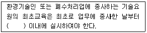
- 6개월
- 1년
- 2년
- 3년
(정답률: 25%)
86. 조치명령 또는 개선명령을 받지 아니한 사업자가 배출허용기준을 초과하여 오염물질을 배출하게 될 때 환경부장관에게 제출하는 개선계획서에 기재할 사항이 아닌 것은?
- 개선사유
- 개선내용
- 개선기간 중의 수질오염물질 예상배출량 및 배출농도
- 개선 후 배출시설의 오염물질 저감량 및 저감효과
(정답률: 32%)
87. 환경부장관이 배출시설을 설치ㆍ운영하는 사업자에 대하여(조업정지를 하는 경우로써) 조업정지처분에 갈음하여 과징금을 부과할 수 있는 대상 배출시설이 아닌 것은?
- 의료기관의 배출시설
- 발전소의 발전설비
- 제조업의 배출시설
- 기타 환경부령으로 정하는 배출시설
(정답률: 17%)
88. 수질오염감시경보 단계 중 경계단계의 발령기준으로 ()에 내용으로 옳은 것은?
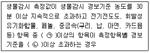
- ㉠ 1개, ㉡ 2배
- ㉠ 1개, ㉡ 3배
- ㉠ 2개, ㉡ 2배
- ㉠ 2개, ㉡ 3배
(정답률: 20%)
89. 낚시제한구역에서의 제한사항이 아닌 것은?
- 1명당 3대의 낚시대를 사용하는 행위
- 1개의 낚시대에 5개 이상의 낚시바늘을 떡밥과 뭉쳐서 미끼로 던지는 행위
- 낚시바늘에 끼워서 사용하지 아니하고 물고기를 유인하기 위하여 떡밥ㆍ어분 등을 던지는 행위
- 어선을 이용한 낚시행위 등 「낚시 관리 및 육성법」에 따른 낚시어선업을 영위하는 행위(「내수면어업법 시행령」에 따른 외줄낚시는 제외한다.)
(정답률: 39%)
90. 폐수처리업에 종사하는 기술요원에 대한 교육기관으로 옳은 것은?
- 국립환경인재개발원
- 국립환경과학원
- 한국환경공단
- 환경보전협회
(정답률: 38%)
91. 공공수역에 정당한 사유없이 특정수질유해물질 등을 누출ㆍ유출시키거나 버린 자에 대한 처벌기준은?
- 1년 이하의 징역 또는 1천만원 이하의 벌금
- 2년 이하의 징역 또는 2천만원 이하의 벌금
- 3년 이하의 징역 또는 3천만원 이하의 벌금
- 5년 이하의 징역 또는 5천만원 이하의 벌금
(정답률: 30%)
92. 대권역 물환경관리계획의 수립 시 포함되어야 할 사항으로 틀린 것은?
- 상수원 및 물 이용현황
- 물환경의 변화 추이 및 물환경목표기준
- 물환경 보전조치의 추진방향
- 물환경 관리 우선순위 및 대책
(정답률: 29%)
93. 초과부과금 산정기준으로 적용되는 수질오염 물질 1킬로그램당 부과금액이 가장 높은(많은) 것은?
- 카드뮴 및 그 화합물
- 6가크롬 화합물
- 납 및 그 화합물
- 수은 및 그 화합물
(정답률: 43%)
94. 수계영향권별 물환경 보전에 관한 설명으로 옳은 것은?
- 환경부장관은 공공수역의 물환경을 관리ㆍ보전하기 위하여 국가물환경관리기본계획을 10년마다 수립하여야 한다.
- 유역환경청장은 수계영향권별로 오염원의 종류, 수질오염물질 발생량 등을 정기적으로 조사하여야 한다.
- 환경부장관은 국가 물환경기본계획에 따라 증권역의 물환경관리계획을 수립하여야 한다.
- 수생태계 복원계획의 내용 및 수립 절차 등에 필요한 사항은 환경부령으로 정한다.
(정답률: 23%)
95. 물환경보전법에 사용하는 용어의 뜻으로 틀린 것은?
- 점오염원이란 폐수배출시설, 하수발생시설, 축사 등으로서 관로ㆍ수로 등을 통하여 일정한 지점으로 수질오염물질을 배출하는 배출원을 말한다.
- 공공수역이란 하천, 오소, 항만, 연안해역, 그 밖에 공공용으로 사용되는 대통령령으로 정하는 수역을 말한다.
- 폐수란 물에 액체성 또는 고체성의 수질오염물질이 섞여 있어 그대로는 사용할 수 없는 물을 말한다.
- 폐수무방류배출시설이란 폐수배출시설에서 발생하는 폐수를 해당 사업장에서 수질오염방지시설을 이용하여 처리하거나 동일 폐수배출시설에 재이용하는 등 공공수역으로 배출하지 아니하는 폐수배출시설을 말한다.
(정답률: 37%)
96. 수질오염방지시설 중 물리적 처리시설에 해당되지 않는 것은?
- 유수분리시설
- 혼합시설
- 침전물 개량시설
- 응집시설
(정답률: 22%)
97. 일일기준초과 배출량 산정 시 적용되는 일일유량의 산정 방법은 [측정유량×일일조업시간]이다. 측정유량의 단위는?
- 초당 리터
- 분당 리터
- 시간당 리터
- 일당 리터
(정답률: 42%)
98. 하천(생활환경기준)의 등급별 수질 및 수생태계의 상태에 대한 설명으로 다음에 해당되는 등급은?
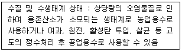
- 보통
- 약간 나쁨
- 나쁨
- 매우 나쁨
(정답률: 44%)
99. 공공수역의 전국적인 수질 현황을 파악하기 위해 설치할 수 있는 측정망의 종류로 틀린 것은?
- 생물 측정망
- 토질 측정망
- 공공수역 유해물질 측정망
- 비점오염원에서 배출되는 비점오염물질 측정망
(정답률: 30%)
100. 위임업무 보고사항 중 업무내용에 따른 보고횟수가 연 1회에 해당되는 것은?
- 기타 수질오염원 현황
- 환경기술인의 자격별ㆍ업종별 현황
- 폐수무방류배출시설의 설치허가 현황
- 폐수처리업에 대한 허가ㆍ지도단속실적 및 처리실척 현황
(정답률: 39%)